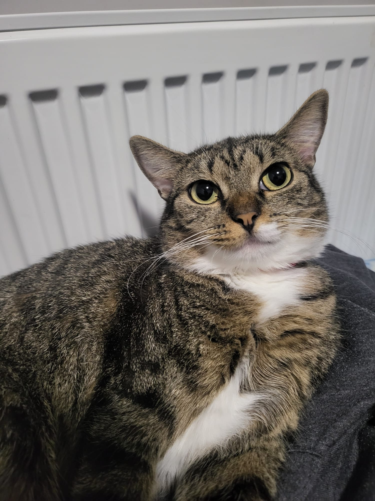

06-70 775 7390
info@duaharasztiallatvedok.hu
Zokni a legfiatalabb volt a csapatból, ránézésre is látszott, hogy kölyök még. Cuki fehér zoknijai vannak és fehér mellénykéje. Dorombolt a simogatásra, már nagyon szeretett volna egy családban játszani. Az első pár napban nyugodt, türelmes környezetre volt szüksége a beszoktatáshoz, de belőle is igazi álomszép kanapé-cica vált, mint a többi társaiból. Szerető, gondoskodó családját kereste.
A történet elején érdemes megemlíteni, hogy az életem bizonyos eseményei miatt a pszichológusom terápiás állatot javasolt a mentális állapotom javítása érdekében. Ez inspirált arra, hogy örökbefogadjak egy cicát. Mindig is vágytam arra, hogy otthont adjak egy cicának, hiszen minden állat megérdemel egy szerető családot. Az előttünk álló időszak nem volt könnyű: több mint egy év telt el, mire teljesen megszokott, addig nagyon félénk volt, minden zajtól, illetve idegentől tartott. Úgy érzem, hogy kölcsönösen jó hatással voltunk egymásra - mindketten apró lépésekben fejlődtünk. Rengeteget köszönhetek neki.
Horváth Levente Roland